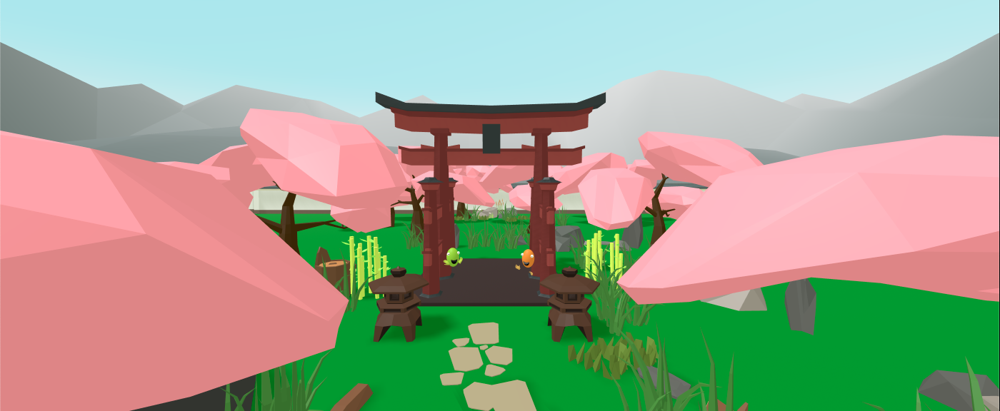

Zendin
A VR zen garden experience.

A customizable zen garden simulation, with guided yoga and meditation lessons, along with other cool features to find! Developed for the Oculus Quest 2, and free to try out on the project website if you have one.